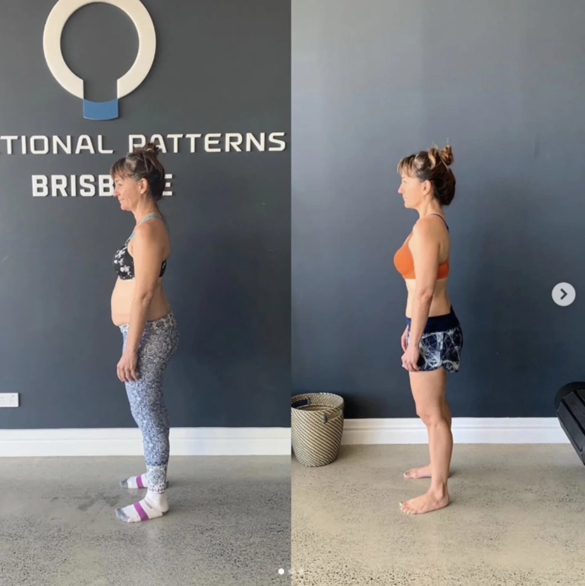

Ready to Start?
Transform Your Posture
90 minutes to understand exactly why your posture is the way it is, which patterns drive it, and what needs to change.

Movement-Based Posture Specialists
You can't simply pull yourself into good posture. Braces and posture correctors weaken the muscles further. We address the root cause of WHY your posture is poor.
If you've ever been told to "just pull your shoulders back" or "stand up straighter," you know it doesn't last. Within minutes, you're back in the same position. That's because poor posture isn't a willpower problem — it's a structural one.
Posture braces and corrective devices make the problem worse. They do the work that your muscles should be doing, causing those muscles to weaken further over time.
To truly correct posture, you need to address the root cause — the movement patterns, fascial restrictions, and muscle imbalances that are holding your body in that position.
The Benefits
Even weight distribution through the skeleton means no single area is overloaded. Pain reduces naturally when the structure is balanced.
When the ribcage is positioned correctly, lung capacity increases. Better breathing means better oxygen delivery to every cell in your body.
Poor posture requires constant muscular effort just to hold you upright. Correct alignment means less energy wasted on compensation.
A compressed torso restricts the organs. Proper alignment gives your digestive system the space it needs to function optimally.
Research consistently shows that upright posture improves confidence, reduces stress hormones, and enhances mental wellbeing.
The Root Cause
Think of your body like a Jenga tower. Gravity acts on us all, and we need our muscles, joints, and bones stacked correctly to resist it. Your body positioning during walking, sitting, sleeping, and running creates cumulative misalignments over time.
When one block shifts, everything above and below has to compensate. A pelvis that tilts forward forces the lower back to arch. A ribcage that drops forces the shoulders to round. These aren't separate problems — they're all connected.
Where your breath resides is where your body grows space. If you breathe into the front of your chest, the front of your body expands and the back compresses. If you breathe into one side more than the other, asymmetry develops.
We assess whether we need to increase or decrease pressure in specific areas based on your individual mechanics. Breathing retraining is a core part of our posture correction program.
Real Results
Comprehensive Posture Transformation
8 Months — Kyphosis, Lordosis & Chronic Pain
"After 8 months I can now move better, with more tension in my body and I'm completely pain free. I had chronic pain from head to toe — kyphosis, lordosis, bloating, forward head posture, headaches. All of it is gone. I've reduced body fat, my scapula sits where it should, and this is the best I've ever felt in my life. If you're dealing with pain and posture issues, this is the place."
— Matt, Verified Google Review
13 Months — 10 Years of Discomfort & Scoliosis
"After years of thinking there was nothing I could do to fix my back issues, this training has been hugely rewarding. I had over 10 years of discomfort, burning pain that I'd rate 8 out of 10, and scoliosis that got worse after having kids. 13 months in and I'm pain free, I can sleep on my side again, and I'm stronger than I've ever been. I wish I'd found this years ago."
— Natalie, Verified Google Review
3 Years — Adrenal Fatigue, Low Testosterone & Structural Breakdown
Ready to Start?
90 minutes to understand exactly why your posture is the way it is, which patterns drive it, and what needs to change.